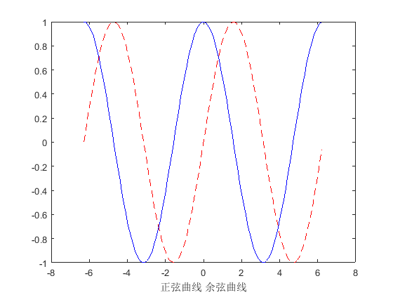

Contents
绘制正弦
clear clc x=-2*pi:0.1:2*pi; y=sin(x); y1=cos(x); plot(x,y,'r--')%红色显示曲线 hold on %图形保持 plot(x,y1,'b-')%绘制蓝色余弦曲线 % xlabel({'正弦函数','sin'})%分行显示 xlabel('正弦曲线 余弦曲线')
X是一个向量
X=2:3:30; plot(X)
X是一个矩阵
X=[2 5 9;7 8 1;9 6 3;]; plot(X)
plot(X,Y),X、Y是向量
X=[1 5 9 3]; Y=[4 2 6 9]; plot(X,Y)
X、Y都是矩阵
A=[1 2 6; 3 10 9;]; B=[5 7 2; 12 9 3;]; plot(A,B)
复数
X是一个复数，那么，横坐标是实部，纵坐标是虚部 plot([1+2*1i,2+4*1i]);